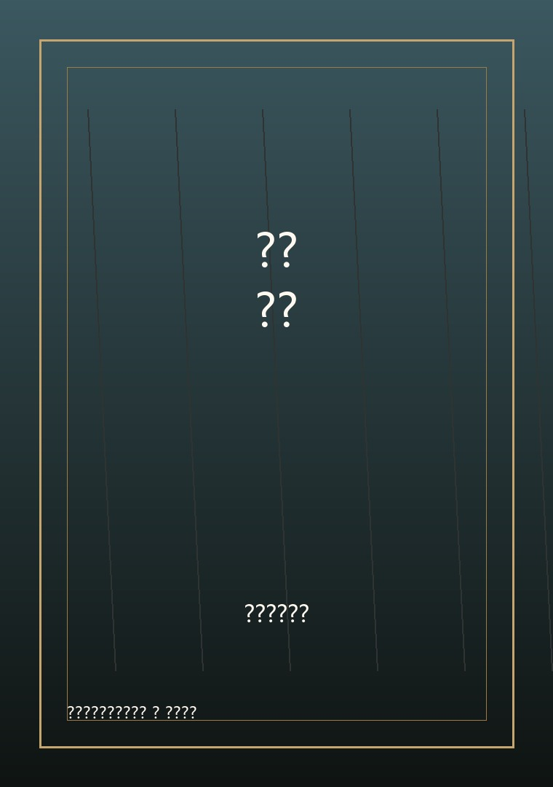
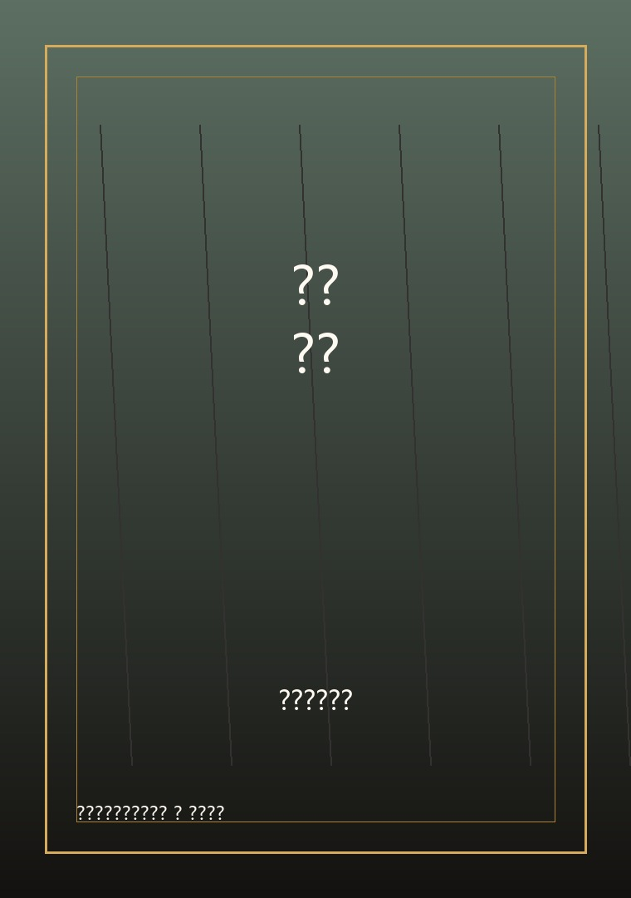

《华文教科书上的马华文学（国中篇）》
文学鉴赏读本，可连接课程与阅读页。
RM40口述历史、典藏记忆
连接过去，启迪未来
Bookshop
文学鉴赏读本，可连接课程与阅读页。
RM40
旧刊资料与文学史入口。
RM36
导师、学员与课程作品集。
RM30马华乡土文学专题。
RM45Writers
Facebook Feed
横向滑动支持鼠标、触控板和手机手势。未来接入每日贴文后，只展示确认发布的最新内容。
“今晚童诗约 3270 期”《导盲犬》刘育龙，童诗获选 2026 华文童诗选。
新书分享会预告：作家与读者在周末下午相聚，一起谈乡土书写。
深耕文学创作课程简章开放报名，小说、诗歌、散文三组同步招生。
想了解更多，请点击这里前往作协 Facebook 页面。
打开 FacebookAbout Association
马来西亚华文作家协会保存写作现场、推动出版交流，也让马华文学的记忆持续被看见。
新版网站把资讯、活动、写书人、图书馆与购书入口整合成可长期维护的文学档案馆。这里可以放协会大合照、会史简介、会员活动和未来想长期保存的公共文化资料。
Council
第 19 届（2019-2022）理事会成员资料先集中展示，未来可继续扩充历届理事会档案。
会长潘碧华
副会长李忆莙、柯金德、年红、胡清朝
秘书长冯宛庭
副秘书长伍燕翎、林玉蓉
财政周锦聪
副财政黄建华
出版及发行组主任蔡晓玲
联络组主任刘淑英
译介组主任廖冰凌
资料组主任李宣春
理事吕育凤、刘育龙、舒颖、林建文、林杨凤
东海岸三州联委会陈雯爱
槟吉玻三州联委会罗秋雁
沙巴州联委会冯学良
砂拉越州联委会晨露
吡叻州联委会王涛
柔佛州联委会暂无